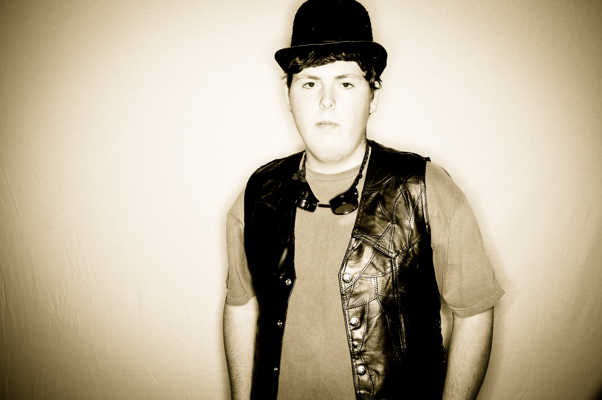
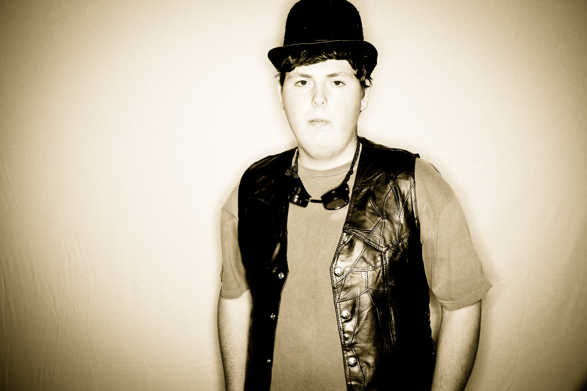

|
|
|
|
|
|
|
|
|


 

|
The SOTAbots are a Washington robotics team combining nontraditional High School students from The Indistrial Design and Engineering Arts School (iDEA), Tacoma School of the Arts (SOTA) and Tacoma Science and Math Institute (SAMi). Every year, we have six weeks to design and build a robot. We are not given a kit, just the game manual, and a size and weight requirement. We must review the game manual and determine the best way to play the game, score points and work well with other bots that will vary in capabilities. Robotics is a great way for students to get involved in their community and learn business skills that they can later apply to real life situations. To get involved with our community we serve meals to families of patients at Mary Bridge and bring one of our smaller robots into Mary Bridge for the children to play with. Each student involved in FIRST Robotics will learn and build teamwork skills, how to work under pressure, goal setting, problem solving, and how to run an efficient and successful business.
In order to determine where to start on this game, we took a few possible mechanisms that would be helpful to have on our bot for this season. It is then determined which tools could be complementary to each other and how some designs could be combined.
Our first robot design is a very fast shooter with the mechanism located in the rear of the robot, can intake fuel from hoppers and the floor, can intake gears from loading stations, and can climb.
Our second robot design is also a very fast shooter, can only intake fuel from hoppers, can intake gears from loading stations and the field, and can climb.
Our third robot design is a fast shooter with the mechanism located in the middle of the robot, can intake fuel from the floor and from hoppers, can intake gears from loading stations and can climb.
When choosing our robot, we decided to go with the first robot because of its overall versatility and function. Having multiple locations to intake fuel could be very useful for the strategy, especially when it comes to scoring in the last few seconds of the match. The ability to intake gears was very struggling for the team to decide on. In the end, we determined that should a gear end up on the floor, we wouldn’t want it to be what decides the match result. The location of the shooter on the robot wasn’t much of an issue except for when it came to space to store balls on the robot. With the shooter in the back, more space in the middle could be used as storage space that is easily accessible for the intake. Climbing was something that was necessary for all three options so that didn’t sway any positions.
For the drive train, the six wheel modified West Coast drive proved to be the most favorable in comparison to the other available drivetrains, especially for its combination of maneuverability and pushing power.
The Intake and shooter is a pretty simple mechanism consisting of two flywheel operating as a double barrel shooter. The way it works is we have two grooved PVC tubes with polycord belts running between them for grip when raising the balls up to the splitter that channels the balls into the two different shooters. The two shooters give us the ability to get nearly twice the fire rate. And with variable speeds we can also get nearly 1 for 1 accuracy.
When designing the fuel container, the idea was for it to hold as many fuel pieces as possible but still leave enough area inside of the robot for a mechanism to put fuel into the high-efficiency boiler, grab gears, and climb. The final product uses the empty space left. In order to utilize space on the sides of the robot, more containers are mounted to the side of the frame.
The purpose of the gear manipulator is to obtain gears and put them on a peg. Some of the components of the gear manipulator are: a claw that is two pieces of metal, pieces of polycarbonate used as backboards, and pneumatics to open and close the claws. The polycarbonate is used as a wedge to pick up gears off the ground and is also used as backboards to catch the gears from the loading station. When a gear is put into the claw, the gear hits a limit switch. This causes the claw to close trapping the gear.
When designing the gear manipulator we first had to decide everything we want it to do. After discussion we decided that it is important to pick up the gears as well as getting them from the loading station. After we had decided this we started prototyping ways to pick up gears ad found using a claw was the best solution.
The mechanism for the climber consists of a motor that has a ratio of (insert ratio here) the motor runs a chain that spins a shaft that has velcro stuck to it. The velcro attaches to the rope then spins it on the shaft. There are two pieces of polycarbonate that are held to the shaft by hubs that make sure the rope stays on the shaft. When the rope snags the bot lifts up. The original idea was for the climber to pivot on a fixed point. This idea didn’t work because it would bypass the size limits when fully extended.
FIRST (For the Inspiration and Recognition of Science and Technology) is a program founded by Dean Kamen to inspire students to be leaders in science and technology, innovation, and foster well-rounded life capabilities including self-confidence, communication, and leadership in students as well as build science, engineering, technology and problem solving skills. To learn more about the FIRST organization, click here.
The SOTAbots' mission is to create and sustain a cohesive student-led team that embodies gracious professionalism and values individual diversity and collaboration. Our team members learn problem solving skills as they design, construct, and program a high-performing robot to compete with other teams from around the world. Our team uses our robot and student passion to inspire an appreciation of science, technology, engineering, arts, and math. We want to share our passion for STEAM, and show our community that careers in STEAM fields are attainable, desirable, and vital.
Powered by SOTAbots students